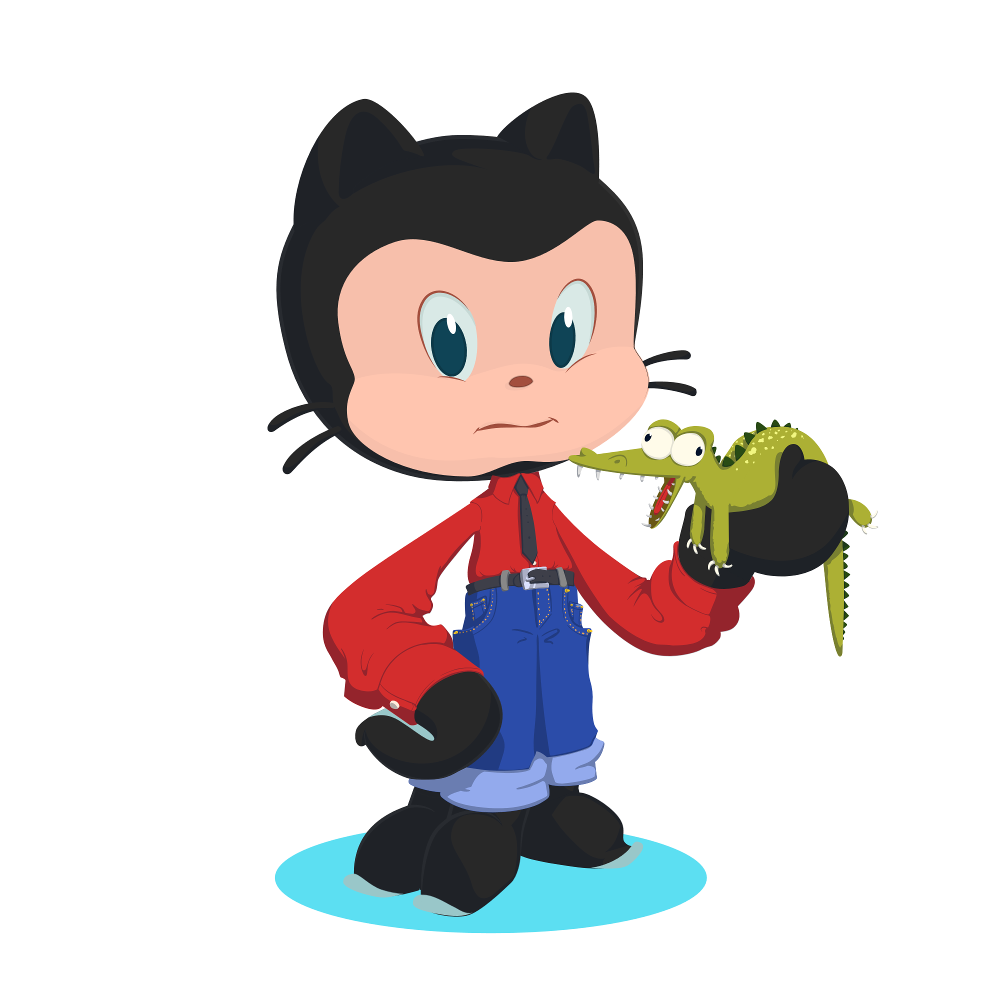

GitHub README’s
Every repository in GitHub can have an associated README. The README is often the first thing visitors see. It serves as the front page of your project, or your profile, and provides information to visitors and potential contributors. A well-crafted README can increase the accessibility and appeal of your project.
README’s can be initialized at the creation of the repository, or added later. They are by default displayed in the code tab of the repository, underneath the files. They are encoded in Markdown.
profile README
Every personal account can have its own README, which is displayed on top of the profile page. This is a place to share information about you and the work you are doing.
To initialize the profile README
- create a repository with a name that matches your GitHub user name
- make it public
- add a README
More information on the GitHub documentation pages GitHub documentation pages.
Dressing up the README
Regardless of which type of README, there are some things that can be used to make the page more informative and break up the text. Most of the below options were developed for profile README’s, but they can also be used on all kinds of repositories.
üòé Add emojis
You can use emojis in the readme to clarify points (and even add them to commits, as I have just learned, use cases are to be determined).
üï∞ You can point out deadlines
✏ Or invite them to contribute
Here is a cheat-sheet.
Display Top Contributors
You can add the top contributors of your repo to the README:
<a href="https://github.com/NBISweden/Training-Tech-shorts/graphs/contributors">
<img src="https://contrib.rocks/image?repo=NBISweden/Training-Tech-shorts" />
</a>
License
Make it easy for others to know what they can do with your code and add license information into your readme. Often these are placed at the top of the readme for even easier accessibility. They link to the text of the license (not in your repository, but on the web). The badge can be inserted to your repository using basic markdown syntax:
[](https://opensource.org/licenses/MIT)
Here are some markdown license badges you can use.
Add images
You can add images to break up the text in your README.
Title banner
These you can use for projects, but also for your very own user readme. They are easily generated here. You can then copy them into your repository and add them from their relative position using markdown:

Octocat
You can design your very own octocat, or choose an existing one, and display it in your readme. Again, you need to add the file to your repository. As an alternative to the markdown approach above you can also use HTML to embed the image:
<img align="middle" src="/posts/2025-03-18-github-readmes/octocat-1740776211964.png" width="280">
Display skills
Skill icons
Advertise your skills by listing skill icons:
also in light mode:
Here is another set of skill icons, based on the above, but with more icons, and more activity for adding new icons.
Below is an example on how to display skill icons in dark and light mode, depending on the system settings:
<div align="center">
<!-- Dark Mode -->
[](https://github.com/LelouchFR/skill-icons#gh-dark-mode-only)
<!-- Light Mode -->
[](https://github.com/LelouchFR/skill-icons#gh-light-mode-only)
</div>Add Github statistics
There are several different ways to display your github stats (if you want to). By default, they will take information off your public repositories, but it is possible to gather information from the private ones too. They come pre-defined for several statistics, but some are customizable.
The Github Profile Summary Cards, for example, come in a lot of different themes and are easily incorporated. Let’s have a look at Mahesh’s statistics in slate-orange:
<div class='container'>
<img style="height: auto; width: 93%;" class="img" src="http://github-profile-summary-cards.vercel.app/api/cards/profile-details?username=mahesh-panchal&theme=slateorange" />
</div>To display your stats you only need to exchange his user name with yours.
These cards can visualize the programming languages by repository, or even commit:
Or summarize your stats, plus the timing of your commits:
Github stats with rank
You can also display your Github readme stats with a rank:
At this point we had a discussion on how including statistics makes sense if they highlight whatever you want to come across in your README (of course the same is true for anything you include). Above, it probably makes sense for Mahesh to include his stats, whereas I might not do it.
Pin repositories
Github restricts the number of repositories you can pin to six. Using the Readme Cards you can pin as many repositories as you wish. Those can be any repositories, your own, from you organization, or from someone else. I have not tried private repositories, though. These here render nicer in the actual GitHub repository.
Again, they can be added using the markdown syntax:
[](https://github.com/amrei-bp/github-readme-stats)
You can specify the information you want to display with description_lines_count, or add the owner of the repository with “show_owner”. The two pinned repositories will render side by side in your repository on Github, and the Training-Tech-shorts will show the owner of the repository.
[](https://github.com/SLUBioinformaticsInfrastructure/Three_Bees_Workshop_Series)
[](https://github.com/NBISweden/Training-Tech-shorts)

make your own badge
If you like badges you can make your own here. When testing this within a repository README the left side of the badges does not show the .png.
An example of a static badge:

An example of a dynamic badge (will be rendered without the .png on the GitHub README). Counting the number of files in the repository:

And another one, specifying the date of the last commit to the repository:

And another one, counting the number of times a Github profile has been accessed since the tracker was installed:
[](https://github.com/NBISweden)
Animated text
You can have text appear on your page, as if it was typed on the spot:
[](https://git.io/typing-svg)
Customizable here.